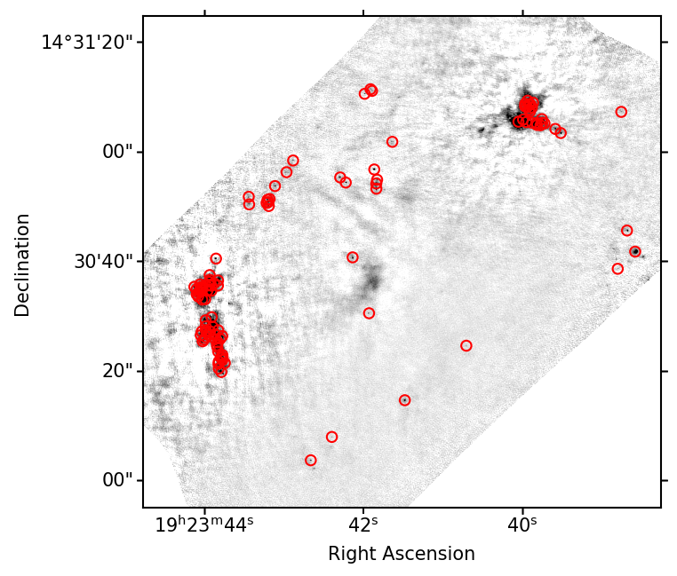
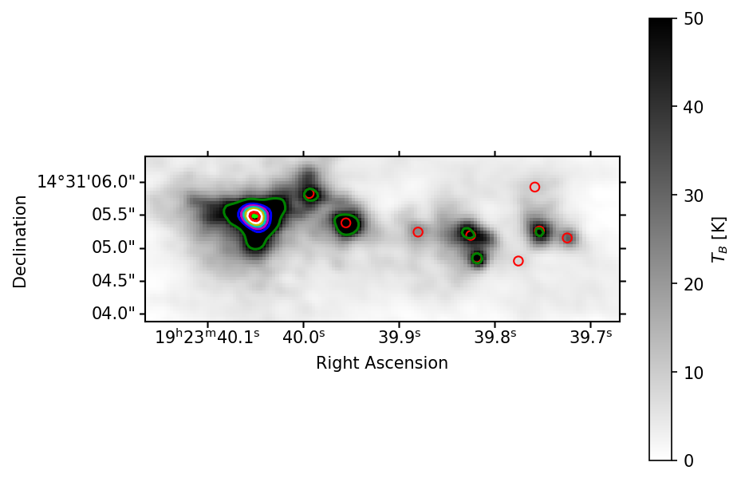
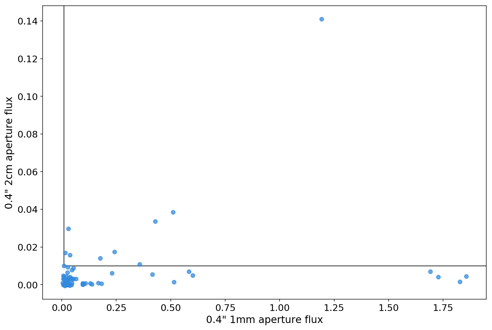
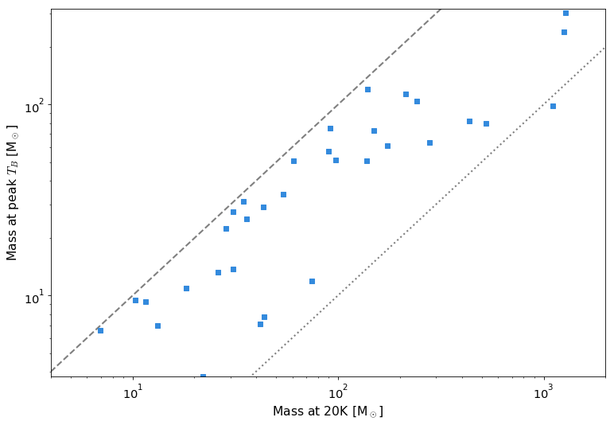
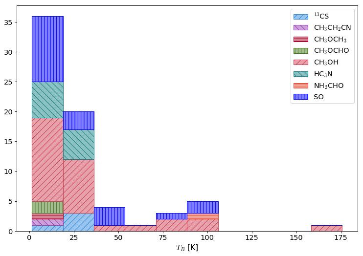
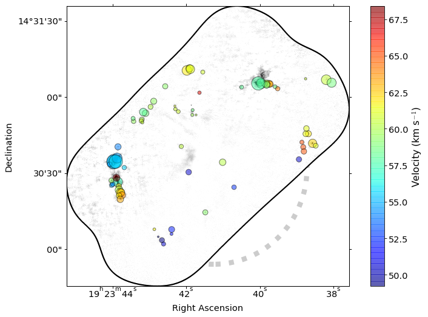
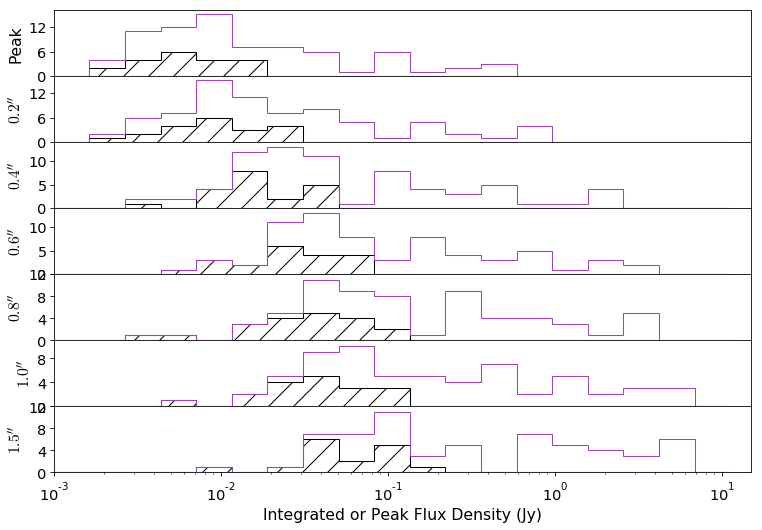
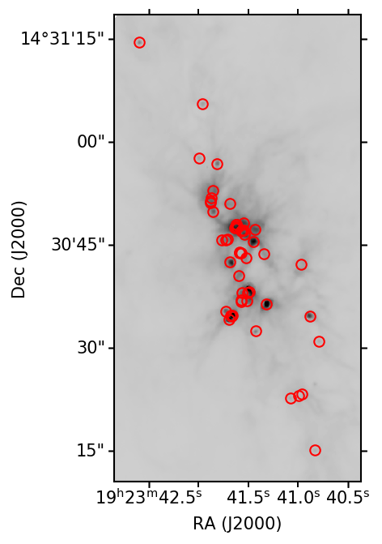
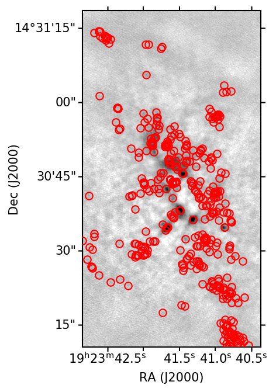
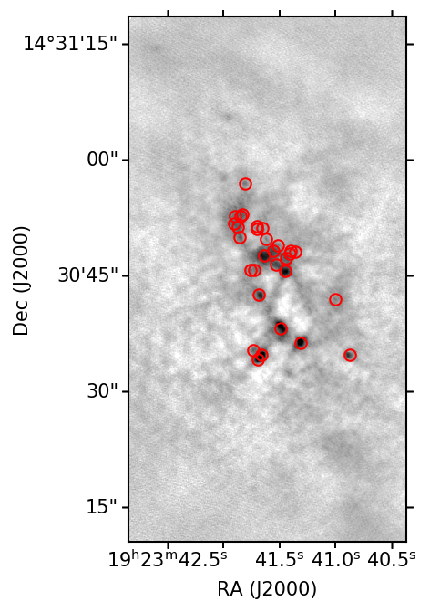

The compact mm sources of W51 and Sgr B2
and what this suggests for analysis of ALMA-IMF
Adam Ginsburg
Source Extraction
- Dendrogram extraction:
- Automated, reproducible
- Problematic for extended structures we're not interested in (HII regions)
- Difficult to use if noise varies (e.g., if bright sources produce noisy sub-fields)
- Hand extraction
- Mildly tedious, unreproducible (e.g., on simulations)
- Reliable: sources are real if you say they are
- Difficult to estimate completeness
Dendrogram-selected cores

Dendrogram-selected cores

Source Photometry (Section C.2)
Contour-based photometry is not great for core or protostar analysis:
- Can't compare contour-based to hand-extracted
- Can't (shouldn't) use contours to extract from other wavelengths (e.g., free-free correction)
- Contours require 'truncation correction' because they only go to
the specified noise threshold, but signal goes all the way down
So, we use circular apertures.
- Multiple apertures yield a radial profile
- "Concentration" is a measure of source structure
Free-free contamination measurement

Temperature Inference
Interpolation of HiGal data does poorly; hot (~100-200K sources dominate)
Fred will tell us about PPMAP later?
Used line \(T_B\) to get lower-limit temperature:
- Assuming dust & gas are mixed, \(T_{dust}\geq T_{B,max}\)
- For each source, extract spectrum across full band
- Fits to each line for each source, bad ones rejected
Effect of adopting temperature peak

Which species is dominant?

Spatial and Spectral distribution

Sources are extended: What constitutes a 'core'?

We fit power-laws to the flux and mass distributions
Fit each aperture excluding free-free fluxes
Powerlaw fit for apertures 0p2: 1.631315423503212+/-0.08083165707886612 xmin: 0.0064744025027009995 n: 61
Powerlaw fit for apertures 0p4: 1.5658370824846624+/-0.07128877156346468 xmin: 0.011868132040355701 n: 63
Powerlaw fit for apertures 0p6: 1.5529861072430189+/-0.07080261581763395 xmin: 0.01943433602461 n: 61
Powerlaw fit for apertures 0p8: 1.9104050128602124+/-0.1785451125325736 xmin: 0.24321248022004 n: 26
Powerlaw fit for apertures 1p0: 1.4623503245632266+/-0.06070957184993224 xmin: 0.026001245374699996 n: 58
Powerlaw fit for apertures 1p5: 1.420579507665507+/-0.054754788083823426 xmin: 0.03052176796733 n: 59
Fit each aperture excluding free-free MASSES, THEN starless-only also
Powerlaw mass fit for apertures 0p2: 1.912047687552428+/-0.11975772845046809 xmin: 5.20167867846 n: 58
Powerlaw mass fit for starless apertures 0p2: 2.6088696890146474+/-0.41540836745144233 xmin: 4.47311821623 n: 15
Powerlaw mass fit for apertures 0p4: 1.815021606866669+/-0.10435282362110364 xmin: 10.2104888538 n: 61
Powerlaw mass fit for starless apertures 0p4: 2.3926434280095217+/-0.359578986925739 xmin: 8.45440665685 n: 15
Powerlaw mass fit for apertures 0p6: 1.7553097307339227+/-0.09670750130612725 xmin: 15.0538010421 n: 61
Powerlaw mass fit for starless apertures 0p6: 2.8898077334723236+/-0.5050723618235171 xmin: 16.4954024498 n: 14
Powerlaw mass fit for apertures 0p8: 1.785955620178369+/-0.11115090974796064 xmin: 29.1094782263 n: 50
Powerlaw mass fit for starless apertures 0p8: 5.749488311948332+/-2.1240357447714393 xmin: 49.827658381 n: 5
Powerlaw mass fit for apertures 1p0: 1.8731582232383897+/-0.13163355495886897 xmin: 51.7280690487 n: 44
Powerlaw mass fit for starless apertures 1p0: 5.273575112776541+/-1.7446797339599336 xmin: 55.5714845757 n: 6
Powerlaw mass fit for apertures 1p5: 2.7917077019490932+/-0.4479269254872733 xmin: 420.574512148 n: 16
Powerlaw mass fit for starless apertures 1p5: 3.2306486231067537+/-0.7053930308535842 xmin: 47.5659895928 n: 10
- Flux slope is shallower for bigger apertures
- "Starless" much steeper than "starry"
- Mass slopes steeper than flux slopes
Completeness Testing
In the paper, I did not discuss completeness testing at all. However, I have well-tested ideas of how to do this.
This code,
and several related scripts, take Aquila and Perseus data, rescale them to 1mm at d=5 kpc, push them through the ALMA
simulator with the
exact UV coverage of the observations, then extracts a dendrogram catalog from them.
When I attempted this, the CASA process was buggy and unsatisfactory.
Details are recorded in some blog posts:
I don't remember the conclusions, but I think they were that
we wouldn't see anything (or at least, not enough to characterize
completeness) from Aquila/Perseus at the distance of W51, which isn't
terribly surprising.
Completeness testing usefully
The framework I've set up will work (demo on next few slides)
To make this useful, we need more reasonable simulations to compare
against, e.g., hydro sims with PPP-identified cores, or synthetic IMFs⇾CMFs⇾images
Perseus at W51, "no noise"

Perseus at W51, CASA-imaged

Perseus at W51, CASA-imaged, pruned catalog

Perseus at W51, "no noise"
Sgr B2: Direct to hand-ID
- HII regions all over the place
- Clearly dynamic-range limited; artifacts common
- Measured fluxes, but did not try to infer masses
- Slope -1.8 to -1.9 for non-HII-region sources
- Could measure spectral indices in-band for brighter sources